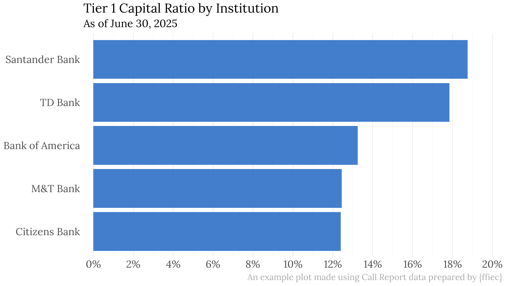

R package for retrieving data from the FFIEC Central Data Repository Web Service.

Installation
{ffiec} can be installed from CRAN using install.packages("ffiec"). Alternatively you can install the development version from GitHub using {pak} like so:
# install.packages("pak")
pak::pak("ketchbrookanalytics/ffiec")Authentication
In order to use {ffiec}, you will first need to create an account through the FFIEC’s Web Service portal, which will provide you with a User ID and Token that must be provided to each function in this R package. Note that the Token is not the same as the password to your FFIEC Web Service account.
Microsoft Entra ID
As of August 25, 2025, authentication into the FFIEC Central Data Repository requires Multifactor Authentication via Microsoft Entra ID.
Organizations that don’t already have a Microsoft Entra identity provider (IDP) should choose one of the following options to create an account:
- Microsoft 365 Products for Business | Microsoft 365 (RECOMMENDED)
- Microsoft Account (Free)
Using Your Credentials with {ffiec}
Once you have your username and password, we recommend setting them as the environment variables FFIEC_USER_ID and FFIEC_BEARER_TOKEN. Perhaps the easiest way to do this is to create an .Renviron file at the root of your project like so:
FFIEC_USER_ID=MyUserId123
FFIEC_BEARER_TOKEN=ZyXwVuT98765Note: the above credentials are example values and will not work – they must be replaced with valid User ID and Token values.
If you prefer not to set these environment variables, you can pass your FFIEC Web Service User ID and Token values to the user_id and bearer_token arguments available in each function in {ffiec}.
Examples
library(ffiec)
# Retrieve filers since 2025-03-31, as of 2025-04-15 21:00:00.000 and return
# as a tibble
get_filers_since_date(
reporting_period_end_date = "03/31/2025",
last_update_date_time = "04/15/2025 21:00:00.000",
as_data_frame = TRUE
) |>
head()
#> # A tibble: 6 × 1
#> ID_RSSD
#> <int>
#> 1 783648
#> 2 562058
#> 3 2745529
#> 4 644057
#> 5 3316739
#> 6 3282012Though the FFIEC Web Service returns data in a few different formats (e.g., XBRL, semicolon-delimited, etc.), {ffiec} returns all data in a tibble for easy of downstream analysis.
# Retrieve facsimile data for reporting period 2025-03-31 for instutition
# with ID RSSD "480228"
get_facsimile(
reporting_period_end_date = "03/31/2025",
fi_id = 480228
) |>
head()
#> # A tibble: 6 × 8
#> CallDate BankRSSDIdentifier MDRM Value LastUpdate ShortDefinition
#> <date> <int> <chr> <chr> <date> <chr>
#> 1 2025-03-31 480228 RCFA3792 209624000 2025-08-28 Total capital (su…
#> 2 2025-03-31 480228 RCFA5310 14397000 2025-08-28 Adjusted allowanc…
#> 3 2025-03-31 480228 RCFA5311 15816000 2025-08-28 Tier 2 capital (g…
#> 4 2025-03-31 480228 RCFA7204 7.6139% 2025-08-28 Leverage ratio (i…
#> 5 2025-03-31 480228 RCFA7205 14.4537% 2025-08-28 Total capital rat…
#> 6 2025-03-31 480228 RCFA7206 13.3631% 2025-08-28 Tier 1 capital ra…
#> # ℹ 2 more variables: CallSchedule <chr>, LineNumber <chr>Need Help?
If you’re in need of assistance working with {ffiec}, don’t hesitate to reach out to our team at info@ketchbrookanalytics.com.